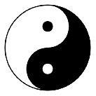

Taoist philosophy talks about how universal energy has two aspects to it: feminine yin energy and masculine yang energy. They are not opposite to one another as much as they are complementary. Every coin has two sides, and every mountain casts a shadow. In the same way that the two sides of a coin form a unit, so do yin and yang. In Chapter 2 of the Tao Te Ching, Lao Tzu says:
Being and non-being create each other.
Difficult and easy complement each other.
Long and short shape each other.
High and low define each other.
Before and after follow each other.
Everything in the universe has both yin and yang aspects to it. The taijitu symbol of Taoism – the circle with the black area holding a dot of white, and a white area holding a dot of black – illustrates this concept: there is a little bit of yang (white) in the middle of the yin (black), and a little bit of yin in the field of yang.

In a similar fashion, women hold both masculine and feminine energy within them (as do men). There is a physiological parallel to this as well. Men's primary sex hormone is testosterone, with estrogen secondary. Women's primary sex hormone is estrogen, with testosterone as secondary.
Feminine yin energy encompasses receptivity, generativity, and yielding. In Taoist philosophy, this is symbolized by water, the ocean or earth. Masculine yang energy is about motion, action and giving; fire is its Taoist symbol.
In the language of modern psychological research, feminine functions are known as expressivity while masculine ones are instrumentality. We will use these terms interchangeably. In A Woman's Worth, Williamson has a lucid description of masculine and feminine and the difference between them: "The masculine is active, the feminine passive; the masculine is dynamic, the feminine magnetic. The masculine does while the feminine is."
Regardless of which terminology you prefer, the yin/yang idea is a powerful one, clarifying many aspects of romance while empowering you in the process. For example, we all express different amounts of yin and yang depending on our station in life, time of year, career situation, even time of day. You may spend your days as a business owner, corporate consultant, high-powered attorney or President of the United States. During these times, you are predominantly utilizing your yang aspect: leading, directing, deciding. Yet you may also be a mother, and when you return home, you switch to the more feeling yin aspect of your energy when dealing with your children.
Balancing yin and yang in partnerships
Although as a woman, your predominant tone is yin, masculine and feminine energies are fluid. Like the tides, yin and yang ebb and rise depending on position and time. While men are predominantly yang, some men have a strong yin energy.
In the context of a relationship, the point to keep in mind is not the absolute value of someone's energy, but rather to look for energy complementarity between partners. Even in a same-sex relationship, one partner will end up being more yin, the other more yang. As in positive and negative charge, or north and south poles of a magnet, polarity is the basis of bringing things together. A connection between yin and yang has polarity, whereas yin-yin and yang-yang have none.
In psychological terminology, a person with more instrumentality is best partnered up with someone who has more expressivity. Both partners can also be androgynous, meaning that they embody both instrumentality and expressivity, yang and yin. In fact, research shows that people who demonstrate both yin and yang energies are easier to get along with.
Let us illustrate these concepts with an example. Jennifer was a successful attorney who saw her marriage of five years coming to an end. When I asked her what precipitated the break, she expressed that her husband wasn't strong enough (actual wording: "He was too wimpy"). One way of interpreting this is that he wasn't expressing enough yang, resulting in a yin-yang imbalance and a loss of polarity. This may have been because she was bringing home a lot of the leading, directive yang energy that her job required. So now, the amount of yang energy the man used to have at the beginning of the relationship – which was probably sufficient when they first got married – was insufficient. This led to a flattening of their relationship and the loss of the spark of passion, which needs the flow of energy between opposite poles.
One way to improve this relationship is to restore the yin-yang polarity. This can happen in several ways: the man steps up his yang; the woman embraces more of her yin, feminine aspect; or some mixture of the two. If the man is plenty masculine already, then the first solution will most likely result in a clash of yang energies, which is a bit like two partners on the dance floor both trying to lead. The other solution is for one of the partners to yield, embracing yin.
It's important to remember that yielding is not the same as submission or losing. Quite the opposite: when one dance partner allows the other to lead, both end up having a lot more fun. And it's not a competition in any case: it's a partnership. It's a win-win situation. In tantric philosophy, the feminine finds its ultimate fulfillment in yielding and surrender. Whether or not that resonates with you, there are times when it is good to lead, and times when it is good to follow. Once again, Chapter 29 of the Tao Te Ching:
There’s a time for leading,
And a time for following;
A time for blowing hot,
And a time for blowing cold;
A time for motion
And a time for rest;
A time for vigor,
And a time for exhaustion;
A time for beginning,
And a time for ending.
The dilemma of the career-oriented woman
If you are reading this book, you are probably a well-educated, career-oriented woman. That's because I wrote this book specifically with you in mind. Being a talented, driven and successful woman creates unique challenges in the dating domain.
There’s a popular conception of how for thousands of years, perhaps even until the 1950s, gender roles roughly mirrored the yin-yang duality. Men were engaged in instrumental functions – hunting or working outside the home – while women stayed at home and took care of the household. Each party appreciated what the other brought to the table, literally and figuratively. Men appreciated the nurturing function of women and their role in raising children, and women were grateful for their men going out and bringing back home a hunk of woolly mammoth for dinner.
That was a long time ago. Many more women now have the choice to pursue an education and career instead of taking on the traditional gender role of staying at home and raising children. As a result, there are many women who are tremendously successful in the traditionally male-dominated workforce. According to Taoist philosophy, this is expected, since we all have both yin and yang energy within us. Women are just as capable of turning on their yang energy and being driven, competitive, powerful leaders as men are of turning on their expressive yin energy and crying over the death of a pet.
However, there is a side effect to this. Whenever anyone spends most of her time and energy on a certain pursuit, then she will come to identify herself more and more with that pursuit (remember the parable of meditating on a cow). In other words, it becomes challenging to turn off the work mentality when it takes up so much of your existence. It reminds me of the old medical school parties, when the spouses of the surgeons would complain that the husband (or wife) was too domineering, running the household as if it were an operating room and he (or she) the undisputed ruler. The surgeons couldn't turn off the surgeon at home, annoying everyone around them and straining their relationships.
Hence, the dilemma of the modern woman. The strength and leadership that a career-oriented woman exhibit are tremendously appealing qualities to almost all educated men I know. However, unless they are expressed in the context of a woman's feminine energies, they are more likely to evoke feelings of respect and admiration rather than attraction.
Men are generally not attracted to women because of how well they emulate male qualities. Men are attracted to your femininity. Think of it this way: how attractive would you find a man with a lot of feminine energy? Men are likely to react the same way towards a woman with a lot of masculine energy. And embracing your femininity is not an abdication of your power; rather, it is the ultimate acceptance of your power.
So if you express your masculine energies at home in the same way you do at work, you are likely to be respected and admired (and perhaps a little feared), but perhaps not cherished. In A Woman's Worth, Williamson calls this the Amazon neurosis, "the woman who achieves at the expense of her tender places."
There is another way, of course. If you wish to be cherished, celebrated and incredibly attractive to men, you may wish to relinquish some of the yang when you're at home and embrace the full power of the feminine. As Williamson put it, "In intimate relationships with men, I want to major in feminine and minor in masculine."
Yin and yang in a relationship
I have noticed that many women in relationships feel that it is their job to steer its course and provide most of the fuel to propel it. She will be the one to initiate serious talks about where the relationship is headed and to give of her time and energy to keep the relationship going. However, from a yin-yang perspective, leading and giving are masculine functions. Even though there is a tendency to think that giving is a feminine function, at its essence it’s a masculine one. The feminine is the receptive.
Of course, in any true partnership, both parties are engaged in giving and taking, which in its highest form manifests as sharing. However, it's important to keep in mind that if you take over the masculine function of giving, then it leaves no room for the man to do that.
Therefore one way to think about relationships is in terms of depth and direction. The depth is a function of yin; the direction is a function of yang. And so, roughly speaking, the masculine will be in charge of the direction of the relationship, while the feminine will be responsible for its depth.
Although we will talk more about what to do once you are in a relationship, keep in mind that this book is mostly about dating, not relationships. Once you've successfully navigated the waters of dating to arrive at a relationship, you may wish to seek out some of the resources featured at the end of the book (e.g. the works of professor of psychology John Gottman).